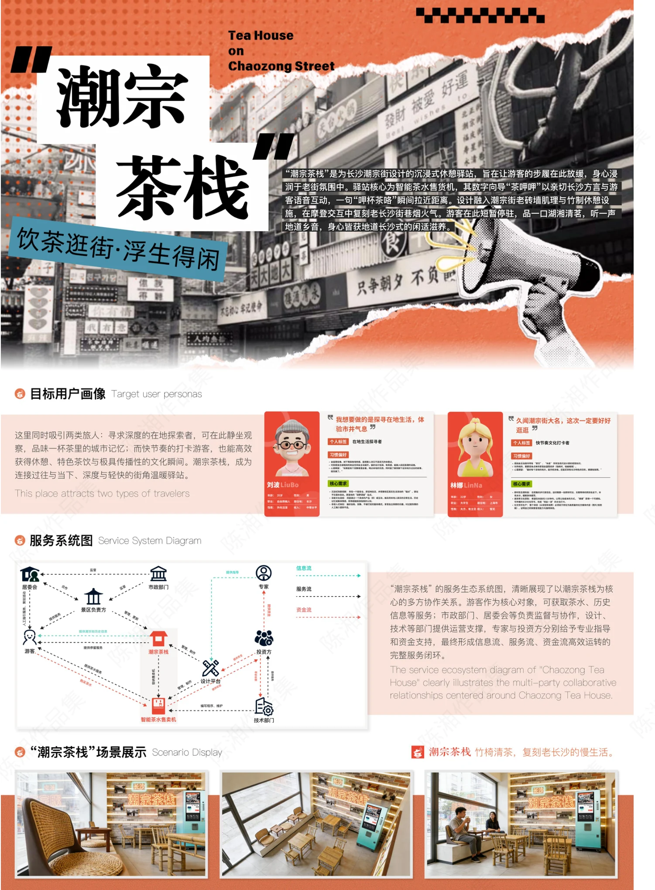
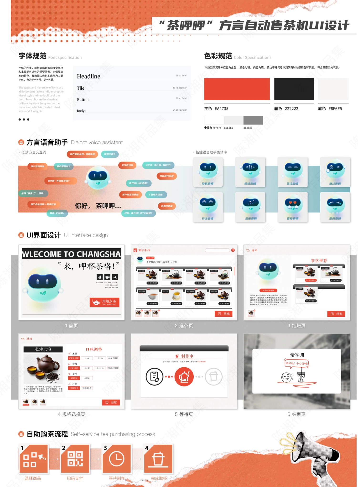

PROJECT 03 / CHAOZONG TEA HOUSE
潮宗茶栈 · 方言自助售茶
把长沙方言、街区游览与自助购茶串成一次在地体验。

从街区文化出发
围绕长沙潮宗街提出沉浸式休憩驿站概念，以茶文化、方言互动和街巷游览连接游客与本地生活。
组织完整的服务体验
方案通过目标用户画像与服务系统图梳理游客、商家及相关参与方之间的联系，结合茶栈空间场景，呈现游览途中停留、交流与购茶的体验。
让售茶界面说方言
“茶呷呷”自助售茶界面包含字体与色彩规范、语音助手、表情系统，以及选茶、规格选择、结账、制作等待与取茶流程。
PROCESS / 设计过程与展板
CLICK TO VIEW FULL SIZE以下为作品集中记录的设计方案与过程。图片可点击放大查看，保留原稿内容与水印。


内容来源：《陈湘作品集（展板）》第 4 页。未明确的项目时间、个人分工及落地结果未作推断。